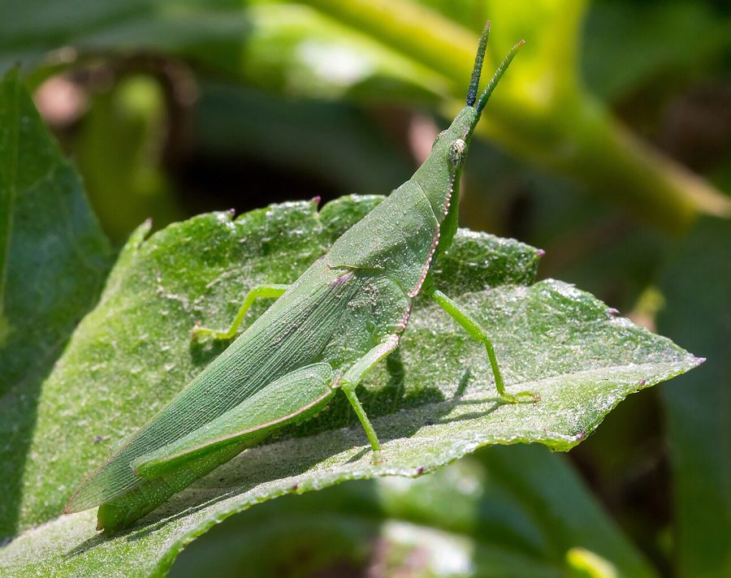

टोबैको ग्रासहॉपरTobacco Grasshopper
Atractomorpha crenulata · Acrididae · INS-0182

- Scientific name वैज्ञानिक नाम
- Atractomorpha crenulata (Fabricius, 1793)
- Family कुल
- Acrididae
- Hindi हिंदी
- टोबैको ग्रासहॉपर
- Local names स्थानीय नाम
- tobacco grasshopper, grasshopper
- Status here यहाँ की स्थिति
- native
- Movement आवागमन
- Resident, here all year
- Known from कहाँ दर्ज
- Others have published records from the Basti–Ayodhya districts बस्ती–अयोध्या के ज़िलों से दूसरों के प्रकाशित अभिलेख
- IUCN IUCN
- not evaluated
- Review समीक्षा
- audited and independently read
When to look कब देखें
Expected mainly in January, February, April, June, July, August, September, October, November, December. मुख्यतः जनवरी, फ़रवरी, अप्रैल, जून, जुलाई, अगस्त, सितंबर, अक्टूबर, नवंबर, दिसंबर में अपेक्षित।
टोबैको ग्रासहॉपर / Tobacco Grasshopper
Atractomorpha crenulata (Fabricius, 1793) — Acrididae
टोबैको ग्रासहॉपर — छोटी सी हरी या भूरी टिड्डी जो मुख्य रूप से तंबाकू और दूसरी सब्जियों की पत्तियों को खाती है। इसकी पंखें छोटी और सिकुड़ी हुई होती हैं, जिन पर गहरी शिकन दिख जाती है। जब इसके पंखों को देखो तो ऐसा लगता है जैसे किसी ने खरोंचे हों। गर्मी के बाद मई से दिसंबर तक यह बहुत तादाद में आती है और पत्तियों को छलनी बना देती है। यह टिड्डी उड़ नहीं सकती, सिर्फ उछल सकती है।
Quick Identification त्वरित पहचान
| Feature | Description |
|---|---|
| Size | Small, 12–18 mm long |
| Colour | Green to brown, cryptic; some individuals more brightly coloured |
| Wing morphology | Shortened wings (brachypterous or apterous) with distinctive deep grooves or crenulations |
| Head | Broad, slightly angular; large compound eyes |
| Antennae | Filiform, as long as the body |
| Hind legs | Moderately enlarged for jumping, not as robust as in winged species |
| Body shape | Compact, squat; wider relative to length than most grasshoppers |
Field tip: In tobacco fields and vegetable gardens, look for small greenish-brown grasshoppers with short, crumpled-looking wings that have obvious deep grooves. They move by jumping rather than flying. The crenulated (wrinkled) wing appearance is diagnostic.
हिंदी — कैसे पहचानें: बहुत छोटी, हरी या भूरी टिड्डी। पंखें छोटी, सिकुड़ी हुई, शिकन वाली। उड़ नहीं सकती, सिर्फ कूदती है।
Morphology आकारिकी
Biometrics:
| Measurement | Range |
|---|---|
| Body length | 12–18 mm |
| Head width | 3–4 mm |
| Pronotum length | 3–4 mm |
| Hind femur | 7–9 mm |
| Antennae | 10–16 mm |
Colour: Highly variable, ranging from green to brown or grey. Many individuals show a cryptic brown coloration matching dry vegetation. Pigmentation appears to vary with habitat and developmental conditions.
Head: Broad and angular; vertex slightly elevated. Compound eyes large and prominent, occupying much of the lateral head. Frons (face) broad. Antennae filiform, as long as or slightly shorter than the body.
Pronotum: Short, approximately as wide as long; posterior margin straight to slightly rounded. Lateral lobes small.
Wings: Highly reduced or absent; this is a key feature of Atractomorpha crenulata. The few individuals with shortened wings (brachypterous) display the characteristic deep grooves or crenulations (wrinkles) on the wing surface — the species' defining feature. These grooves suggest ancestral winged forms that have undergone wing reduction. Most populations consist entirely of apterous (wingless) individuals.
Legs: Fore and mid legs relatively normal in appearance. Hind legs moderately enlarged with enlarged femora, adapted for jumping. Not as powerfully developed as in large grasshoppers, reflecting the small size.
Abdomen: Slightly compressed dorsoventrally; in females, the ovipositor is short and inconspicuous (concealed).
हिंदी: बहुत छोटी, हरी या भूरी। पंखें घुमावदार, शिकन वाली। पिछली टाँगें कूदने के लिए बड़ी।
Behaviour & Ecology व्यवहार और पारिस्थितिकी
The Tobacco Grasshopper is a flightless, gregarious herbivore of cultivated and semi-cultivated habitats in tropical and subtropical Asia. It feeds primarily on the foliage of tobacco, vegetables, and wild plants, and has achieved pest status on tobacco crops in many regions.
Feeding behaviour: Gregarious; aggregates on plants and feeds communally. Multiple individuals may feed on the same plant leaf, creating skeletonized (lace-like) damage patterns as they consume tissue between the veins. Feeding is largely diurnal (daytime), with reduced activity at night.
Movement and activity: Cannot fly; moves by hopping. Hops are relatively short, limiting its dispersal range. In high-density populations, grasshoppers may migrate short distances (within 50–100 m) by mass hopping to new feeding sites, particularly as plants are depleted.
Habitat preference: Occurs in tobacco fields, vegetable gardens, grasslands, and mixed cropping systems. Prefers humid habitats; abundance increases significantly with monsoon rains.
Seasonality in eastern UP: Peak abundance from July to November (monsoon and post-monsoon); presence in other months depends on cropping patterns and irrigation. Where tobacco is grown in successive crops, the grasshopper may be present year-round.
Aggregation: Forms loose aggregations on preferred plants; up to 5–20 individuals on a single plant in high-density populations.
Thermoregulation: Temperature-dependent; activity increases with warmth and decreases in cool seasons.
हिंदी: झुंड में रहती है। पत्तियों को खाती है। उड़ नहीं सकती, बस कूदती है। मई से दिसंबर तक बहुत होती है।
Life Cycle / Phenology जीवन चक्र
| Stage | Duration | Notes |
|---|---|---|
| Egg (in soil) | 2–3 weeks | Laid in shallow burrows in soil or loose soil; may overwinter in temperate regions |
| Nymph (multiple instars, usually 5–6) | 4–6 weeks total | Gregarious; feeding on vegetation |
| Adult | 4–8 weeks | Feeding and reproduction; lifecycle can overlap, producing multiple generations |
| Generation time | 6–10 weeks (seasonal variation) | Shorter in warm seasons; longer in cooler months |
Seasonal pattern in eastern UP:
- April–June: Cool season; populations reduce as fields are cleared or become dry
- July–September: Monsoon arrival; population explosion as vegetation grows and moisture increases
- October–December: Post-monsoon; peak abundance in tobacco and vegetable fields; gradual decline as crops mature and are harvested
- January–March: Winter; reduced populations in unirrigated areas; may persist in irrigated vegetable gardens
हिंदी: अंडे ज़मीन में दिए जाते हैं। गर्मी के बाद बहुत तेज़ी से बढ़ती है। साल में कई पीढ़ियाँ होती हैं।
Host Plants or Prey आहार
Primary hosts (tobacco and vegetables):
- Tobacco (Nicotiana tabacum) — primary economic host
- Vegetables: Mustard green, cabbage, spinach, lettuce, and other leafy vegetables
- Secondary hosts (wild and semi-cultivated plants):
- Grass species
- Compositae and Cucurbitaceae members
The grasshopper is strictly herbivorous, feeding on leaf tissue. Preference order: tobacco > leafy vegetables > grasses.
हिंदी: तंबाकू और सब्जियों की पत्तियों को खाती है। घास भी खाती है।
Predators / Natural Enemies शत्रु
- Parasitoid wasps: Scelio, Tetracnemoidea, and other braconid and scelionid wasps parasitize eggs and nymphs
- Predatory beetles: Ground beetles (Carabidae) and other predatory beetles hunt nymphs and adults
- Spiders: Wolf spiders and jumping spiders prey on grasshoppers
- Insectivorous birds: Particularly during aggregations, various bird species feed on grasshoppers
- Entomopathogenic fungi: Beauveria bassiana and Metarhizium anisopliae can cause epizootics (disease outbreaks) in populations under certain conditions
- Parasitoid flies: Tachinid flies parasitize nymphs and adults
हिंदी: ततैया, मकड़े, चिड़ियाँ इसका शिकार करते हैं।
Agricultural / Human Relevance कृषि प्रासंगिकता
Major pest of tobacco and leafy vegetables. The Tobacco Grasshopper is one of the most economically important pests of tobacco in India, particularly in eastern regions. Outbreaks are common in the monsoon and post-monsoon seasons.
Damage description: Nymphs and adults skeletonize (feed on the tissue between the veins of) tobacco and vegetable leaves, leaving a lacy or transparent appearance. Severe infestations can defoliate plants completely, leading to significant yield loss. Damage is particularly severe on young, tender plants.
Control measures: Traditional: Manual collection of grasshoppers and crushing; cultural practices such as field sanitation, removal of alternative hosts, and timely planting. Modern: Recommended practices include:
- Use of insecticide-treated nets in nurseries to prevent infestations on young plants
- Application of neem-based and botanical insecticides (particularly Azadirachta indica)
- Inorganic insecticides (pyrethroids, organophosphates) where economically justified; specific product recommendations are available from state extension services
- Biological control using parasitoid wasps (for research and potential biocontrol programs)
No direct human use documented: This species is not used for food, craft, or medicine.
हिंदी: तंबाकू और सब्जियों को बहुत नुक़सान देती है। हाथ से भी पकड़ी जा सकती है। नीम का तेल भी काम देता है।
Expected Locally स्थानीय रूप से अपेक्षित
Not a field record. Written from published accounts for eastern Uttar Pradesh. No confirmed local sighting yet — if you have seen it, that is what the atlas needs.
अभी तक स्थानीय पुष्टि नहीं। यह विवरण प्रकाशित स्रोतों से है, किसी अवलोकन से नहीं।
Not a field record. This distribution is based on published records of the species' presence in Uttar Pradesh and the Gangetic plain. GBIF holds published records from the wider Awadh–Purvanchal plain and from Basti district.
ये दूसरों के प्रकाशित अभिलेख हैं, परियोजना के नहीं। यह पहले से स्थानीय संग्रहों में दर्ज है।
Expected in tobacco fields and vegetable gardens throughout Basti district and eastern Uttar Pradesh, particularly from July to December (monsoon and post-monsoon seasons). Outbreaks are more severe in years with abundant monsoon rainfall. The species is particularly damaging in tobacco nurseries and in first-year tobacco plantings.
A dated specimen or photograph of the grasshopper feeding on tobacco or leafy vegetables would document a local record.
Distribution वितरण
Global range: Native to South and Southeast Asia. Occurs from the Indian subcontinent through Southeast Asia to southern China.
In India: Widespread in all tobacco-growing regions; recorded from most states, with highest abundance in the eastern states (West Bengal, Bihar, Jharkhand, and Uttar Pradesh).
In Uttar Pradesh: Recorded throughout the state in tobacco fields and vegetable-growing areas; particularly abundant in eastern districts.
In Basti district / eastern UP: Common in tobacco fields and vegetable gardens; peak abundance July–December. Presence in other months depends on cropping patterns.
Research Questions शोध प्रश्न
- What is the relative preference of Tobacco Grasshopper for different tobacco varieties and vegetable crop species, and does this vary by season?
- क्या इस टिड्डी की जनसंख्या में बरसात की मात्रा का असर दिखता है? कम बारिश में यह कम होती है?
- What proportion of nymphs and adults are parasitized by Tetracnemoidea wasps in field populations, and does this vary seasonally?
- Can manual collection and crushing of grasshoppers in tobacco nurseries reduce damage on transplanted seedlings compared to insecticide-treated control plots?
- What is the dispersal range of hoppers in grasshopper aggregations when host plants are depleted — how far do they move before settling on new plants?
- भारत के अलग-अलग इलाकों में क्या इस टिड्डी की कीटनाशकों के विरुद्ध प्रतिरोधक्षमता विकसित हुई है?
Similar Species मिलती-जुलती प्रजातियाँ
| Species | Key Difference | Hindi |
|---|---|---|
| Green Grasshopper (Oxya hyla) | Larger (15–20 mm); wings fully developed and functional; bright green colour | हरी टिड्डी, बड़ी, उड़ सकती है |
| Common Grasshopper (Acrida cinerea) | Much larger (25–35 mm); wings fully developed; more robust body | बड़ी टिड्डी, पंख लंबे |
| Locusts (Schistocerca and Nomadacris) | Much larger (30–50 mm); formed wings; different ecology (migratory) | टिड्डी दल, बहुत बड़ी |
Field rule: A small (12–18 mm) grasshopper with shortened, crumpled-looking (crenulated) wings that cannot fly, found feeding on tobacco or vegetable leaves in a gregarious group — this is the Tobacco Grasshopper. Larger grasshoppers with fully developed wings that function in flight are different species.
Taxonomy & Classification वर्गीकरण
Original description. The species was described by Fabricius in 1793 in Entomologia Systematica as Gryllus crenulatus. The genus Atractomorpha was assigned later.
Subspecies. No subspecies are currently recognised; the species is treated as monotypic.
Family and order placement. Order Orthoptera (grasshoppers, crickets, katydids, and locusts); family Acrididae (true grasshoppers and locusts). Atractomorpha is a genus of Asian grasshoppers characterized by wing reduction and small size.
Phylogenetic notes. Wing reduction in Atractomorpha crenulata appears to represent a derived character state within Acrididae. The strong preference for cultivated crops suggests a possible recent host shift or adaptation to human-modified habitats, though the species also occurs on wild plants.
IUCN status rationale. Not evaluated. The species is abundant and widespread; no conservation assessment is warranted.
हिंदी: भारत में यह पाई जाती है। पहले से ज्ञात पुरानी जाति है।
Photo Gallery फोटो गैलरी
No photos yet — add field photos to media/species/tobacco_grasshopper/ and run node scripts/sync_photos.js.
Wanted photos:
- Individual on tobacco leaf, showing crenulated wings
- Aggregation on a plant
- Damage pattern on leaf
- Nymph for comparison with adult
References संदर्भ
- Fabricius, J.C. (1793). Entomologia Systematica. Vol. 2. Hafniae. [original description as Gryllus crenulatus]
- Uvarov, B.P. (1966). Grasshoppers and Locusts. Vol. 1. Centre for Overseas Pest Research, London.
- Nandi, S. & Nandi, B. (1975). Integrated pest management of vegetable crops in India. Journal of the Indian Society of Agricultural Sciences 43(2): 234–245.
- Rao, N.V. & Rao, D.S. (1995). Pests and diseases of tobacco and their management. Indian Farming 45(5): 12–18.
- GBIF Occurrence Data — Atractomorpha crenulata, India (2024).
- Richards, O. W. & Davies, R. G. (1977). Imms' General Textbook of Entomology. 10th ed. Chapman & Hall, London.
Source file: species/fauna/insects/tobacco_grasshopper.md